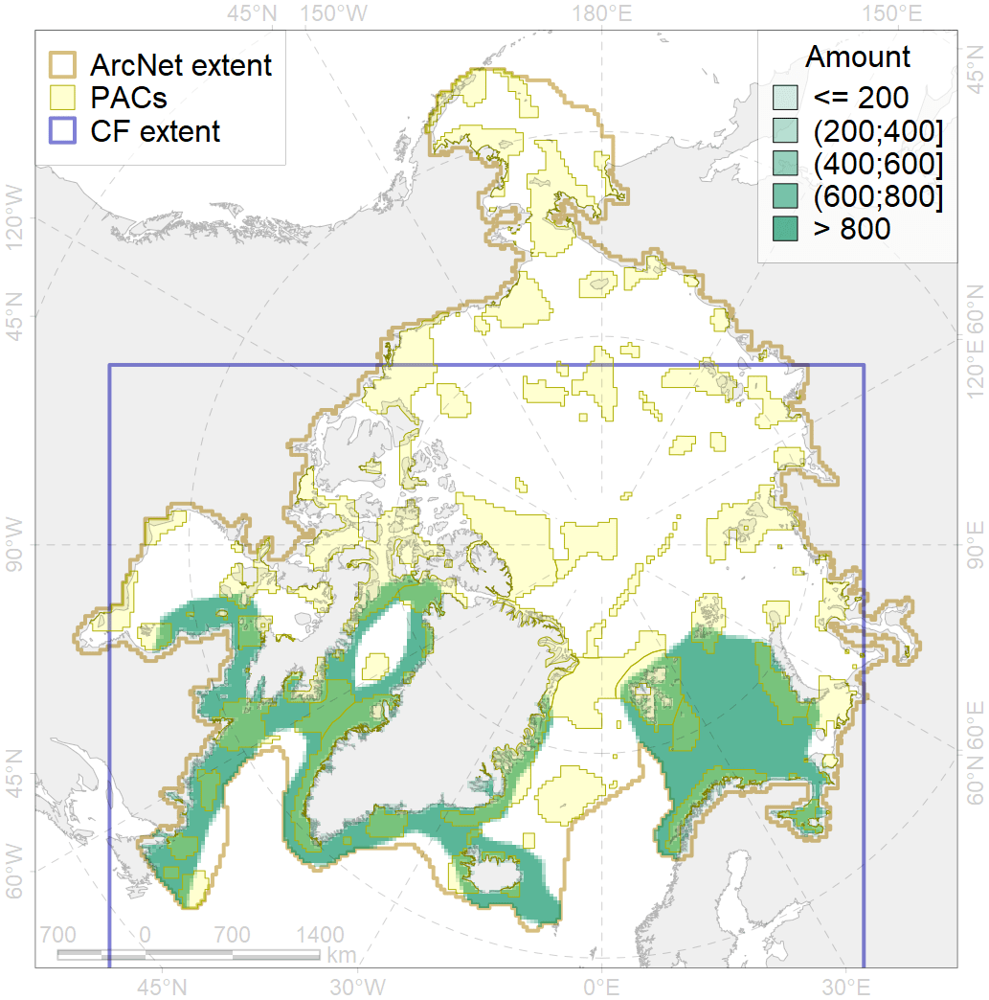
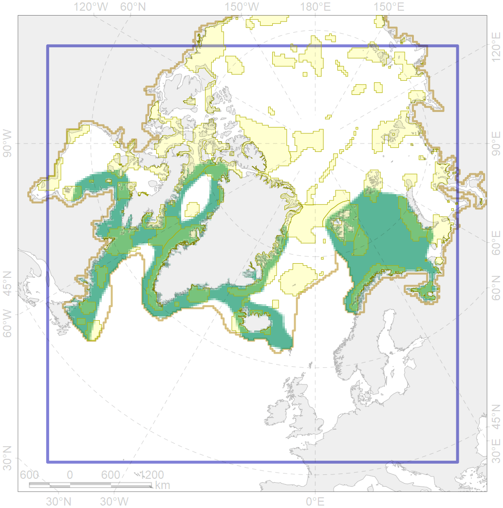

4046

| CF code | 4046 |
| CF name | Range of the Thorny Skate (Amblyraja radiata) |
| Time Period | 1950-2010s |
| Source(s) | Pethon 2005; Dolgov, 2011; Reshetnikov, 2013; Coad, Reist, 2018; Mecklenburg et al., 2018 |
| Seasonality | Jan-Dec |
| Depth Horizon | 50-1540 |
| Methodology | Compiled from literature sources based on field observations |
| Use Restrictions | Open access |
| Author Name | N. Chernova |
| Notes | |
| Scenario’s Target | 0.072 |
| Target Achievement | 0.385 (Scenario: 534.8%) |
| PAC | Share of the Total Amount within the PAC | Share of the Target Achievement for the ArcNet | PAC’s Contribution to the Target Achievement |
|---|---|---|---|
| 20 | 0.4%0.4% | 5.3%6.0% | 1.0%1.1% |
| 21 | 2.8%2.9% | 34.3%35.1% | 6.4%6.6% |
| 22 | 0.7% | 9.3% | 1.7% |
| 23 | 0.0%0.0% | 0.2%0.3% | 0.0%0.0% |
| 24 | 0.1%0.1% | 0.7%1.0% | 0.1%0.2% |
| 25 | 0.1%0.1% | 0.8%1.0% | 0.1%0.2% |
| 26 | 0.8%0.9% | 8.9%9.7% | 1.7%1.8% |
| 27 | 2.5%2.8% | 31.0%33.0% | 5.8%6.2% |
| 29 | 0.0%0.1% | 0.4%1.0% | 0.1%0.2% |
| 30 | 3.2%3.4% | 43.7%45.2% | 8.2%8.5% |
| 31 | 1.7%1.8% | 21.5%23.1% | 4.0%4.3% |
| 32 | 3.4%3.5% | 43.0%44.3% | 8.0%8.3% |
| 37 | 0.2%0.2% | 1.2%1.4% | 0.2%0.3% |
| 38 | 0.8%0.9% | 9.1%9.9% | 1.7%1.9% |
| 39 | 0.2%0.3% | 2.8%3.1% | 0.5%0.6% |
| 40 | 0.0%0.1% | 0.4%0.6% | 0.1%0.1% |
| 41 | 0.2%0.3% | 1.8%2.0% | 0.3%0.4% |
| 42 | 1.4%1.5% | 17.9%17.9% | 3.3%3.3% |
| 43 | 0.1% | 1.1% | 0.2% |
| 44 | 4.4%5.0% | 57.2%63.4% | 10.7%11.9% |
| 45 | 2.6%2.9% | 34.2%37.9% | 6.4%7.1% |
| 46 | 0.7%0.9% | 9.0%11.2% | 1.7%2.1% |
| 48 | 0.1%0.1% | 0.9%0.9% | 0.2%0.2% |
| 49 | 0.3%0.4% | 3.9%3.9% | 0.7%0.7% |
| 50 | 0.1% | 1.1% | 0.2% |
| 51 | 1.5%1.7% | 20.3%23.1% | 3.8%4.3% |
| 52 | 1.3%1.4% | 17.8%19.6% | 3.3%3.7% |
| 67 | 0.3% | 3.6% | 0.7% |
| 71 | 0.5% | 6.2% | 1.2% |
| 72 | 0.1%0.2% | 0.8%1.1% | 0.2%0.2% |
| 73 | 0.9%0.9% | 11.1%11.2% | 2.1%2.1% |
| 75 | 0.0%0.0% | 0.1%0.1% | 0.0%0.0% |
| 76 | 3.0%3.1% | 39.0%39.5% | 7.3%7.4% |
| 77 | 1.0% | 12.4% | 2.3% |
| 78 | 0.0%0.0% | 0.0%0.1% | 0.0%0.0% |
| 79 | 0.9%1.0% | 10.4%10.5% | 1.9%2.0% |
| 80 | 0.3%0.3% | 3.1%3.4% | 0.6%0.6% |
| 81 | 0.5%0.5% | 5.1%5.3% | 0.9%1.0% |
| inner | 37.2%40.2% | 469.5%499.6% | 87.8%93.4% |
| outer | 62.0%66.0% | 65.3%108.3% | 12.2%20.2% |
| † supplement values are for area consistence whereas principal values are for Accenter compatible gridded stats |